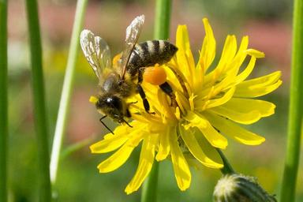
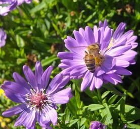
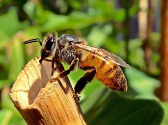
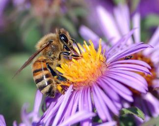
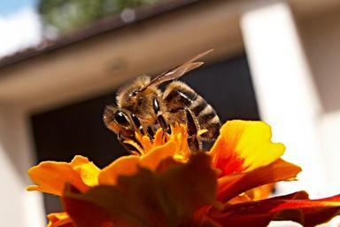
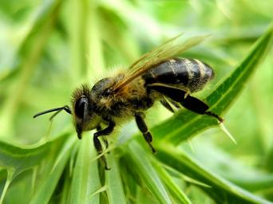

Honey bees are important pollinators for flowers, fruits, and vegetables. They transfer pollen between male and female parts, allowing plants to grow seeds and fruit. This means that bees help other plants grow!



Honey bees live in hives (or colonies). The members of the hive are divided into three types:
Lucky for us, honey bees produce 2-3 times more honey than they need, so we get to enjoy the tasty treat too!
Did you know that honey bees fly at a speed of around 25 kilometers per hour and beat their wings 200 times per second!



Honey bees are excellent boogiers! To share information about the best food sources, they perform their "waggle dance". When the worker returns to the hive, it moves in a figure-eight and waggles its boddy to indicate the direction of the food source!